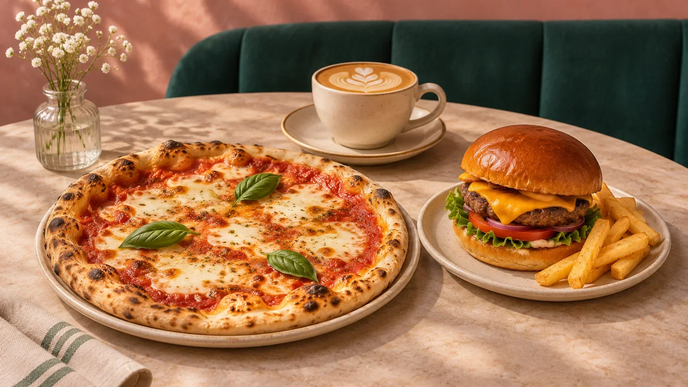
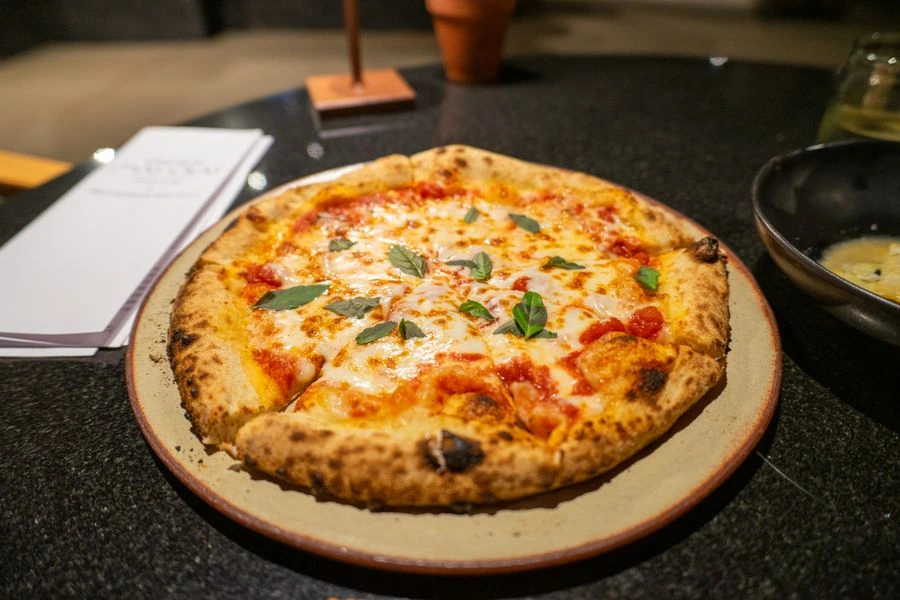
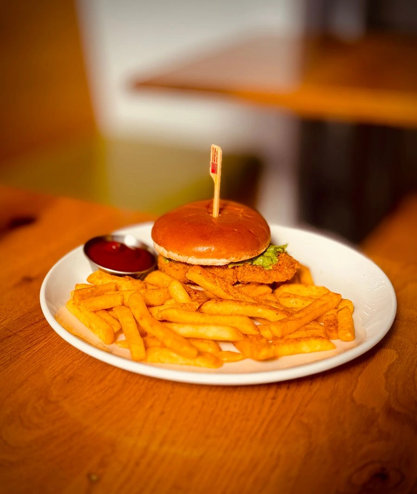

Încearcă-ți norocul.
O învârtire pe zi. Premiul e valabil doar azi, până la miezul nopții.
Sau apasă direct pe roată.

Trei lucruri pe care clienții le laudă în recenzii.

Mozzarella, sos de roșii și busuioc. Cea mai simplă pizza din meniu și una dintre cele mai lăudate în recenzii.
28 lei
Pui, cheddar, salată și roșii, servit cu cartofi și sos. Bun pentru o pauză de prânz scurtă.
18 lei
Crispy de pui cu cartofi și sos. Merge la fel de bine în local sau la pachet.
29 leiMozzarella, sos de roșii și busuioc.★ preferata casei
Șuncă, mozzarella, ciuperci, măsline și sos de roșii.
Mozzarella, parmezan, gorgonzola și emmentaler.
Mozzarella, salam, șuncă, ciuperci, măsline și sos de roșii.
Ton, ceapă și sos de roșii.
Salam picant, mozzarella și sos de roșii.
Șuncă, mozzarella, parmezan, rucola și sos de roșii.
Ananas, șuncă, mozzarella și sos de roșii.
Mozzarella, salam, șuncă, cârnăciori, bacon, ciuperci, măsline și porumb.
Mozzarella, ciuperci, ardei, măsline, porumb și sos de roșii.
Piept de pui, mozzarella și sos de roșii.★ preferata casei
Burger de vită servit cu cartofi și sos.
Pui, cheddar, salată și roșii. Servit cu cartofi și sos.
Carne de vită, cheddar, cartofi și sos.★ preferata casei
Șnițel de pui cu salată de varză, cartofi și sos.
Shaorma în lipie, cu cartofi și sos.
Carne de pui cu cartofi, salată, sos și chiflă.
Crispy de pui cu cartofi și sos.
Cu mozzarella și șuncă.
Cu mozzarella și piept de pui.
Nimic pe filtrul ăsta. Încearcă altul.
Pe Aleea Cristalului, vizavi de parc: pizza, burgeri, crispy și shaorma, de la 7 dimineața până la 10 seara. Vii cu copiii, iar cât aștepți comanda ei se joacă în parc.
O învârtire pe zi. Premiul e valabil doar azi, până la miezul nopții.
Sau apasă direct pe roată.
Mâncare foarte gustoasă, proaspătă și bine pregătită! Porțiile sunt generoase, ingredientele de calitate, iar gustul este exact ce trebuie. Totul a fost delicios și cu siguranță voi reveni cu drag. Recomand cu încredere!
Mâncarea foarte gustoasă, servirea rapidă și elegantă, foarte primitoare și prietenoasă locația, recomand cu toată încrederea și prețurile foarte corecte și cinstite, calitatea e mult peste alte locații!
Este un loc bun pentru copii, deoarece fix în fața localului este un parc unde copiii se pot juca. În rest, mâncarea foarte bună, prețuri bune, iar mâncarea vine repede. Recomand cu încredere!
Cel mai bun local din Dorohoi fără îndoială, prețuri minunate, produse de calitate, un personal minunat, cu siguranță voi reveni, de 70 de lei au mâncat 4 persoane pe săturate, 100% recomand
Pot spune că de când am intrat a fost o atmosferă foarte primitoare, mâncarea a fost la fel de bună, servirea a fost rapidă și angajații foarte amabili. Recomand cu încredere!
Am fost pentru prima dată la Fabi Food & Coffee și chiar am rămas plăcut surprinsă. Mâncarea a fost foarte bună, porțiile generoase, iar servirea rapidă.
Am comandat pizza family crispy și pizza cu piept de pui, a fost foarte bună, o pizza de calitate și cu un gust aparte. Recomand cu încredere!
O locație superbă. Peste așteptări. Dorohoi chiar merita un loc ca acesta, cu mâncare bună și la un preț accesibil pentru toată lumea.
Mâncarea foarte bună, atmosfera primitoare și foarte curat totul. Cu siguranță mai venim să încercăm și celelalte tipuri de mâncare.
Este un loc curat, primitor și cu gust, mâncarea este delicioasă și angajații sunt foarte amabili. Recomand cu încredere!
Un loc superb, cu atmosferă plăcută și mâncare bună. Cele mai bune prețuri din orașul Dorohoi, calitate, cantitate.
Pizza a fost foarte bună, mai ales cea margherita. Personalul a fost amabil și înțelegător.
Am încercat pizza și burgerul cu cheddar, ambele foarte bune. Recomand cu drag!
Mâncarea extraordinară, personalul gentil, locația de 10+
Foarte bun! Am mâncat burger cheddar și a fost delicios.
Mâncarea și personalul sunt pur și simplu la alt nivel!
Cea mai bună pizza din Dorohoi, foarte bună!
Bun, ieftin și rapid!